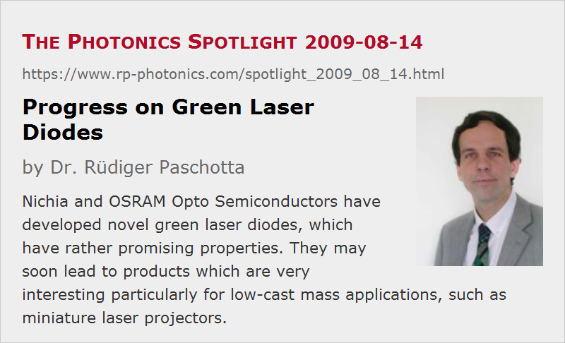

Progress on Green Laser Diodes
Posted on 2009-08-14 (revised on 2012-05-10) as a part of the Photonics Spotlight (available as e-mail newsletter!)
Permanent link: https://www.rp-photonics.com/spotlight_2009_08_14.html
Author: Dr. Rüdiger Paschotta, RP Photonics Consulting GmbH
Abstract: Nichia and OSRAM Opto Semiconductors have developed novel green laser diodes, which have rather promising properties. They may soon lead to products which are very interesting particularly for low-cast mass applications, such as miniature laser projectors.

Ref.: T. Miyoshi et al., “510–515 nm InGaN-based green laser diodes on c-plane GaN substrate”, Appl. Phys. Express 2, 062201 (2009); A. Khan, “Laser diodes go green”, Nature Photon. 3, 432 (2009); encyclopedia articles on green lasers and laser diodes; The Photonics Spotlight 2009-04-17
We have laser diodes (LDs) emitting at a great variety of wavelengths, but it is rather difficult to make any green-emitting LDs. For a long time, it was not possible to achieve any good performance, and particularly not combined with a reasonable device lifetime. Very recently, however, the company Nichia, well known for its blue laser diodes, has published results which indicate a major advance in the field.
The technology used by Nichia is not exactly new; they extended the technology of indium gallium nitride (InGaN) to longer wavelengths, mainly by improving the growth quality, and not by fundamental material changes or new device designs. They employed MOCVD growth technology, which is in principle common but not well established for that relatively new type of material system. The growth quality depends on many parameters of the MOCVD machine which can be tweaked. That tweaking is a rather tedious and expensive process, involving many expensive growth runs and extensive characterization of the samples produced. However, once a set of good parameters (a “sweet spot”) has been identified, it is comparatively inexpensive to produce many working samples, as many of them can be cut from a single wafer. (During the test phase, it doesn't help much to have a large wafer; you get more than you need to learn how well it worked.)
The advance in performance is quite encouraging, probably better than most experts would have expected to be possible soon. The output power of 5 mW is a bit low, but this might be improved soon. The estimated lifetime of more than 5000 hours is lower than for most other LDs, but already sufficient for many applications.
So far, only emission wavelengths up to 515 nm have been realized. This is definitely green light, but a somewhat shorter wavelength than ideal for getting a wide color gamut with an RGB source; the 532 nm as obtained e.g. from frequency-doubled Nd:YAG lasers is better suited for displays. However, this may be good enough e.g. for low-cost laser projectors, as discussed in The Photonics Spotlight 2009-04-17. It remains to be seen how far the wavelength can be pushed further. It seems that the technical challenges rapidly get stronger as one tries to increase the wavelength.
The other problem with the current device is the high operation voltage of 5.5 V, which is much higher than e.g. for blue laser diodes, despite the lower photon energy. This combined with the operation current of 88 mA, the power consumption is 484 mW. So the power efficiency is lower than that of many other approaches, involving e.g. frequency doubling.
It is difficult to judge how fast the further technical progress will be, as Nichia will probably not reveal as much as required by their competitors to judge that. However, it appears that they are close to making a low-cost product which is suitable for a number of mass applications.
Just yesterday, OSRAM Opto Semiconductors also announced a 515-nm laser diode based on InGaN. They reported only pulsed operation, apparently because the laser threshold is too high for continuous-wave operation. However, they may also be close to achieve similar performance as Nichia.
So these are all interesting news, certainly exciting for anyone needing a low-cost green laser. Those who developed other kinds of green lasers, based on frequency doubling (e.g. Corning) may be less happy, but still have some technical advantages such as a higher output power, possibly better efficiency and the longer wavelength. So they might also not get out of business with their products.
This article is a posting of the Photonics Spotlight, authored by Dr. Rüdiger Paschotta. You may link to this page and cite it, because its location is permanent. See also the RP Photonics Encyclopedia.
Note that you can also receive the articles in the form of a newsletter or with an RSS feed.
Questions and Comments from Users
Here you can submit questions and comments. As far as they get accepted by the author, they will appear above this paragraph together with the author’s answer. The author will decide on acceptance based on certain criteria. Essentially, the issue must be of sufficiently broad interest.
Please do not enter personal data here; we would otherwise delete it soon. (See also our privacy declaration.) If you wish to receive personal feedback or consultancy from the author, please contact him e.g. via e-mail.
By submitting the information, you give your consent to the potential publication of your inputs on our website according to our rules. (If you later retract your consent, we will delete those inputs.) As your inputs are first reviewed by the author, they may be published with some delay.
|  |
If you like this page, please share the link with your friends and colleagues, e.g. via social media:
These sharing buttons are implemented in a privacy-friendly way!